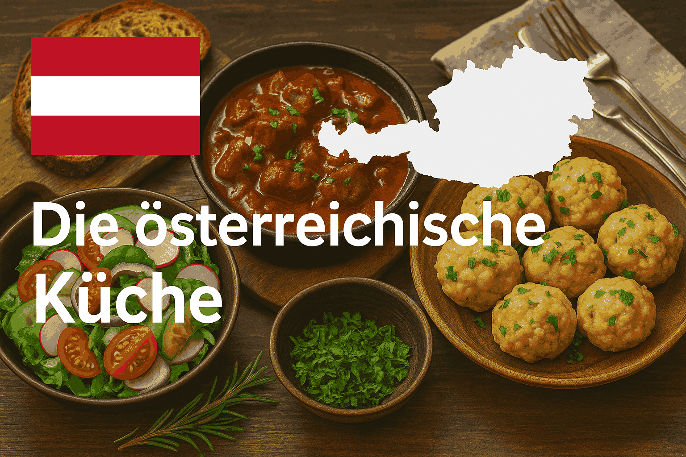

Original Wiener Schnitzel
Das Wiener Schnitzel gilt als eines der bekanntesten Gerichte Österreichs und wird traditionell aus zartem Kalbfleisch zubereitet. Es wird dünn geklopft, in Mehl, Ei und Semmelbrösel paniert und in Butterschmalz goldbraun ausgebacken. Entscheidend ist die leichte „Soufflage“ – die Panade löst sich beim Frittieren vom Fleisch und bildet eine lockere, knusprige Hülle. Serviert wird es klassisch mit Zitronenspalte, Petersilienkartoffeln oder Kartoffelsalat.Lust auf was Neues ?
Die Österreichische Küche
Die österreichische Küche zählt zu den vielfältigsten und traditionsreichsten in Europa. Sie ist geprägt von regionalen Zutaten, saisonalen Gerichten und starken Einflüssen aus den ehemaligen Ländern der Donaumonarchie. Besonders bekannt ist sie für ihre herzhaften Fleischspeisen wie das Wiener Schnitzel, Tafelspitz oder Gulasch, aber auch deftige Beilagen wie Semmelknödel, Erdäpfelsalat oder Kraut gehören fest dazu. Ebenso wichtig ist die süße Seite der österreichischen Kulinarik. Kaiserschmarrn, Apfelstrudel und Sachertorte haben internationale Bekanntheit erreicht und sind beliebte Klassiker in Kaffeehäusern und Wirtshäusern. Die österreichische Küche vereint Bodenständigkeit mit Raffinesse und steht für gemütliche, genussvolle Esskultur, die bis heute mit viel Leidenschaft gepflegt und weitergegeben wird.
